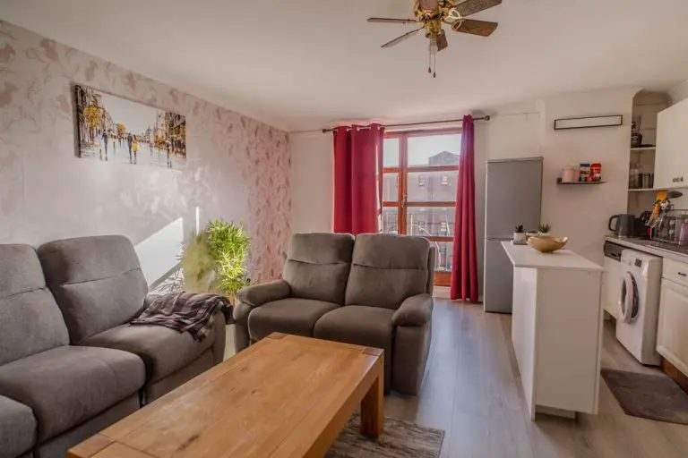
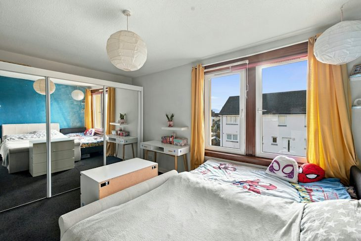
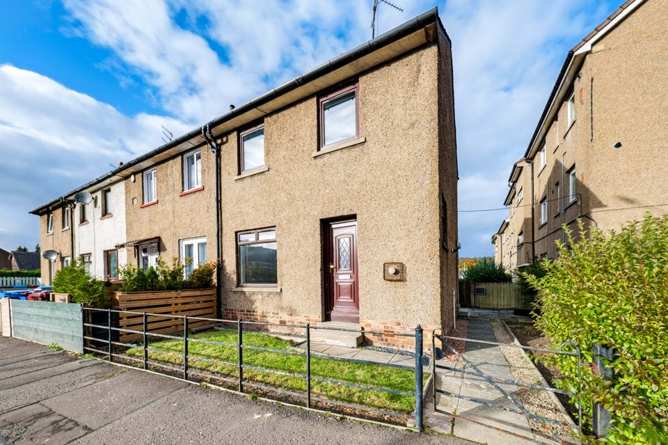
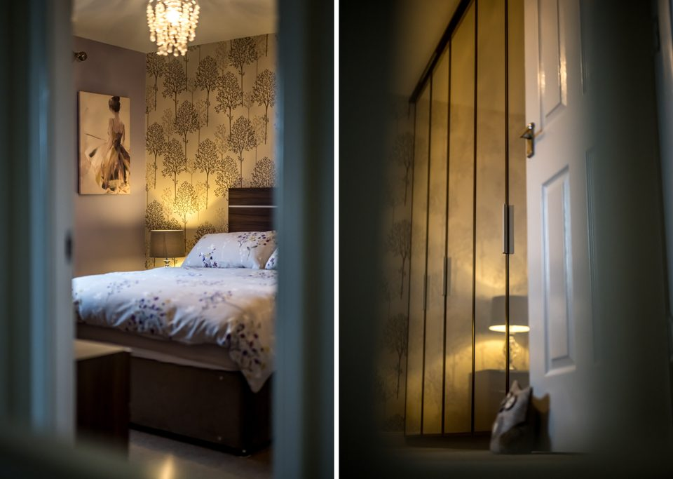
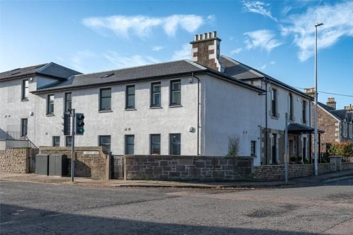
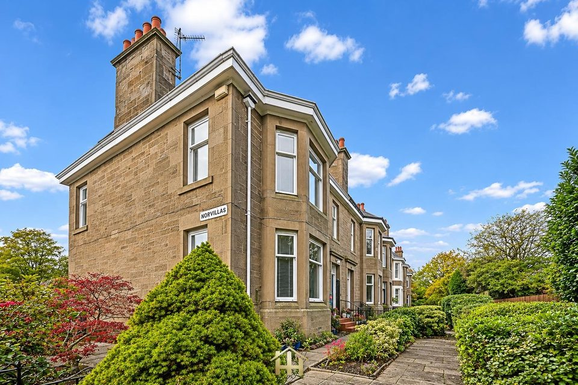
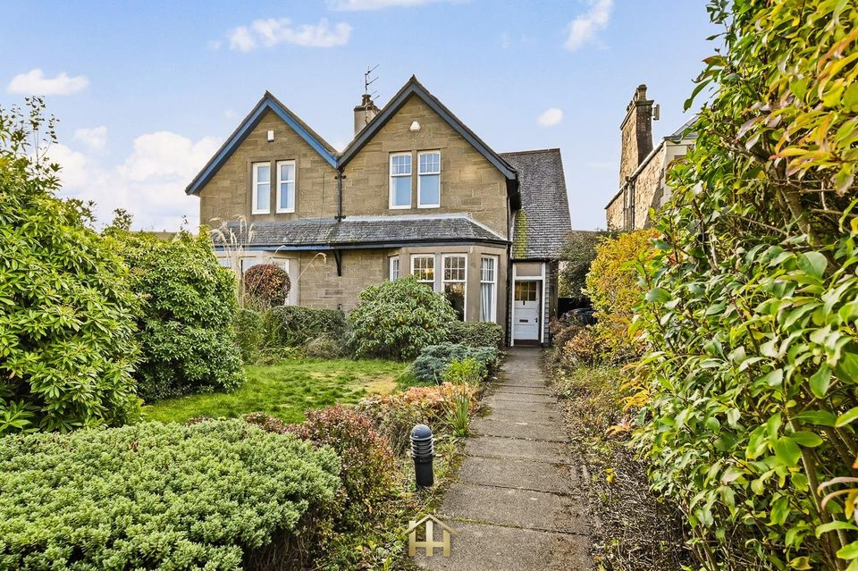
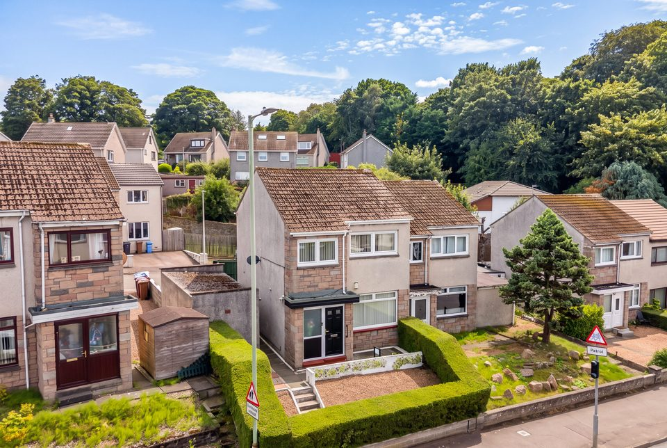
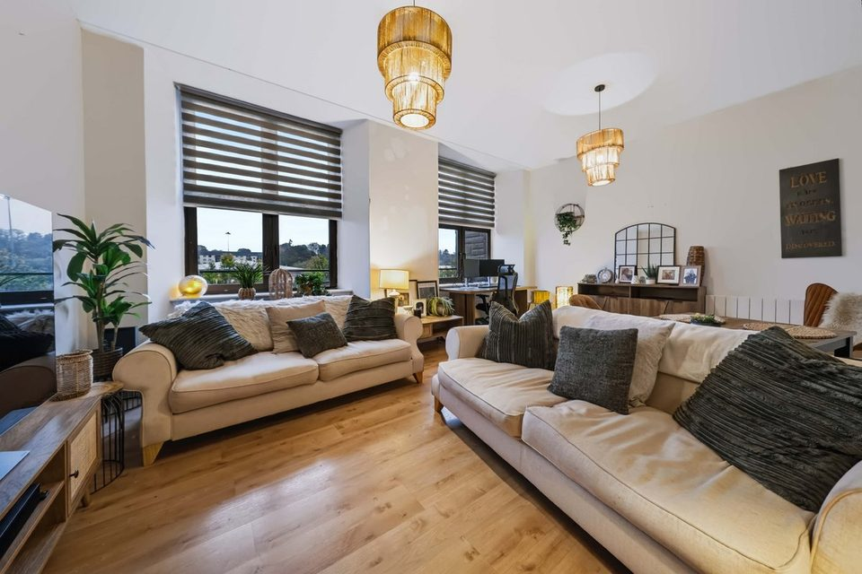
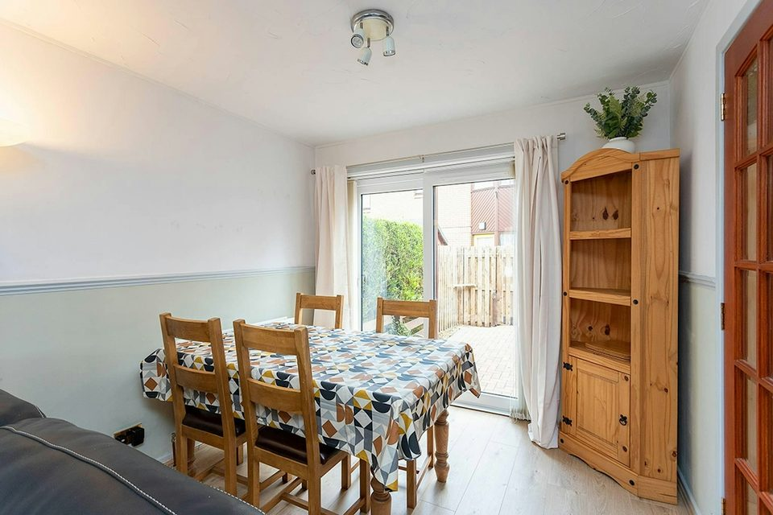

First-floor flat2 bedrooms

£90,000Offers Over
6 Caledonian Court, Eastwell Road, Dundee
Area to confirm
Approx. 1.5 miles · 29 min walk from Tip Top
First seen 6 November 2026; listing date unavailable · Gilson Gray
Daily property watch
Homes for sale · 2–3 bedrooms · Up to £270,000
Updated 11 November 2026 · 4 new · 1 price change · 198 in the archive
Area to confirm
Approx. 1.5 miles · 29 min walk from Tip Top
First seen 6 November 2026; listing date unavailable · Gilson Gray

Area to confirm
Approx. 2.1 miles · 41 min walk from Tip Top
First seen 6 November 2026; listing date unavailable · Richmond and Co
Non-traditional construction.
Original agent page unavailable; portal listing linked.

Broughty Ferry
Approx. 4.6 miles · 88 min walk from Tip Top
Listed 4 November 2026 · McIntyre Properties

Area to confirm
Approx. 0.9 miles · 18 min walk from Tip Top
Listed 4 November 2026 · Rosie Fraser Real Estate

Area to confirm
Approx. 0.5 miles · 11 min walk from Tip Top
Listed 4 November 2026 · Tula Property

Area to confirm
Approx. 0.9 miles · 18 min walk from Tip Top
First seen 5 November 2026; listing date unavailable · Lindsays

Area to confirm
Approx. 1.0 miles · 21 min walk from Tip Top
First seen 5 November 2026; listing date unavailable · The Chamber Practice
Complete renovation and modernisation required.

Area to confirm
Approx. 2.2 miles · 44 min walk from Tip Top
Listed 3 November 2026 · Axis Property
Original agent page unavailable; portal listing linked.

Area to confirm
Approx. 3.1 miles · 58 min walk from Tip Top
Listed 3 November 2026 · McIntyre Properties

City Centre
Approx. 1.1 miles · 21 min walk from Tip Top
Listed 3 November 2026 · Westholme Estate Agents
Fairmuir
Approx. 0.3 miles · 6 min walk from Tip Top
Listed 3 November 2026 · Springbok Properties
Original agent page unavailable; portal listing linked.

Area to confirm
Approx. 1.9 miles · 35 min walk from Tip Top
First seen 4 November 2026; listing date unavailable · Gilson Gray

Area to confirm
Approx. 3.0 miles · 57 min walk from Tip Top
Listed 31 October 2026 · McCash Property Haus

Central Ferry
Approx. 4.7 miles · 91 min walk from Tip Top
Listed 30 October 2026 · Verdala

Area to confirm
Approx. 4.1 miles · 78 min walk from Tip Top
First seen 31 October 2026; listing date unavailable · Lindsays
Factoring charge advertised at £101 per month.

Area to confirm
Approx. 1.1 miles · 21 min walk from Tip Top
Listed 29 October 2026 · Harmony Homes

Area to confirm
Approx. 1.5 miles · 31 min walk from Tip Top
Listed 29 October 2026 · Harmony Homes

Area to confirm
Approx. 4.7 miles · 91 min walk from Tip Top
Listed 29 October 2026 · Verdala

Area to confirm
Approx. 1.4 miles · 29 min walk from Tip Top
Listed 29 October 2026 · McIntyre Properties

Area to confirm
Approx. 0.6 miles · 12 min walk from Tip Top
Listed 29 October 2026 · McEwan Fraser Legal